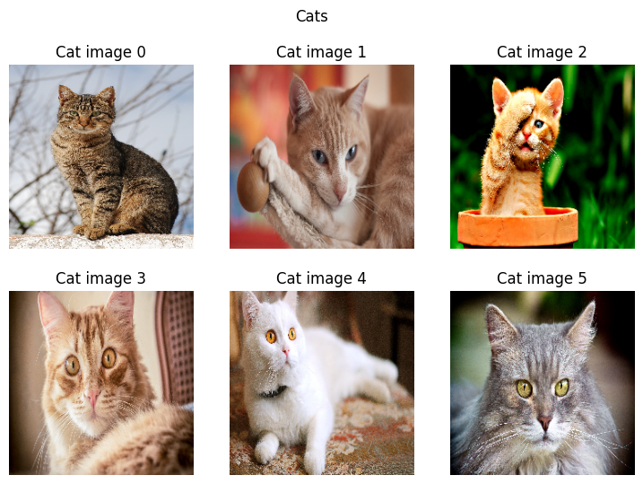

from fastai.vision.all import *Display images
Search image URLs
!pip install -Uq duckduckgo_searchfrom duckduckgo_search import ddg_images
from fastcore.all import *
def search_images(term, max_images=30):
print(f"Searching for '{term}'")
return L(ddg_images(term, max_results=max_images)).itemgot('image')urls = search_images("cat", max_images=10)Searching for 'cat'print(f"Number of URLs: {len(urls)}")
print(urls[0])Number of URLs: 10
https://wallup.net/wp-content/uploads/2019/09/1667-beautiful-gray-cat.jpgDownload images to a temp folder
import tempfile
temp_folder = tempfile.TemporaryDirectory()
temp_path = Path(temp_folder.name)
download_images(dest=temp_path, urls=urls)print(f"Number of images: {len(temp_path.ls())}")
print(f"Sample: {temp_path.ls()[0]}")Number of images: 8
Sample: /var/folders/6r/7z6k6kj96wvf3qhq_xqpzy380000gn/T/tmpguam1f7p/4e787d39-7f6a-4c26-be66-49c40a331d7b.jpgDisplay images on a grid
image_files = temp_path.ls()[0:6]
captions = [f"Cat image {x}" for x in range(len(image_files))]show_images(
ims=[
PILImage.create(image_file).reshape(224,224)
for image_file in temp_path.ls()
],
titles=captions,
nrows=2,
ncols=3,
suptitle='Cats',
)
Cleanup
temp_folder.cleanup()